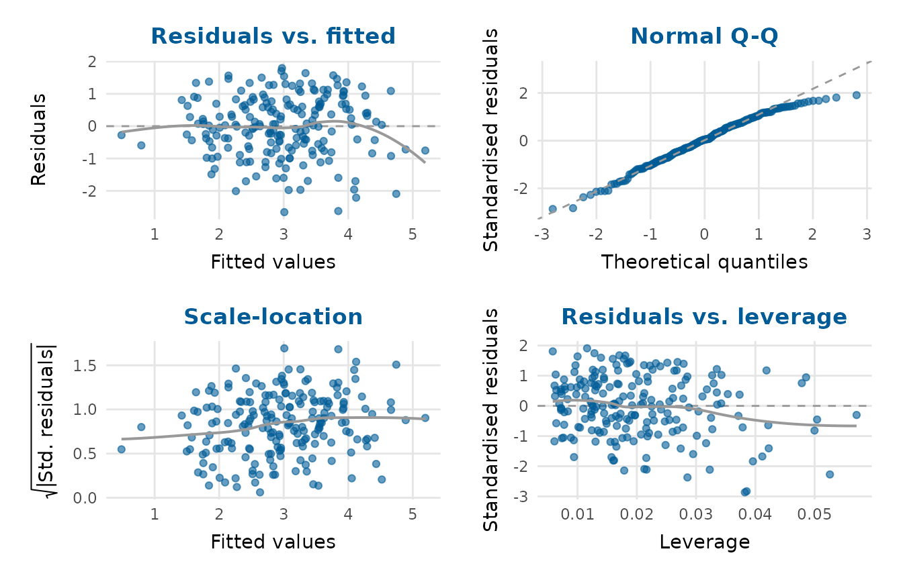
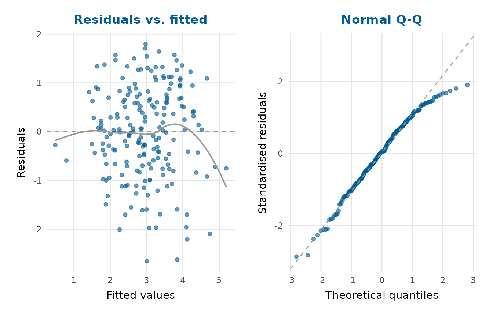
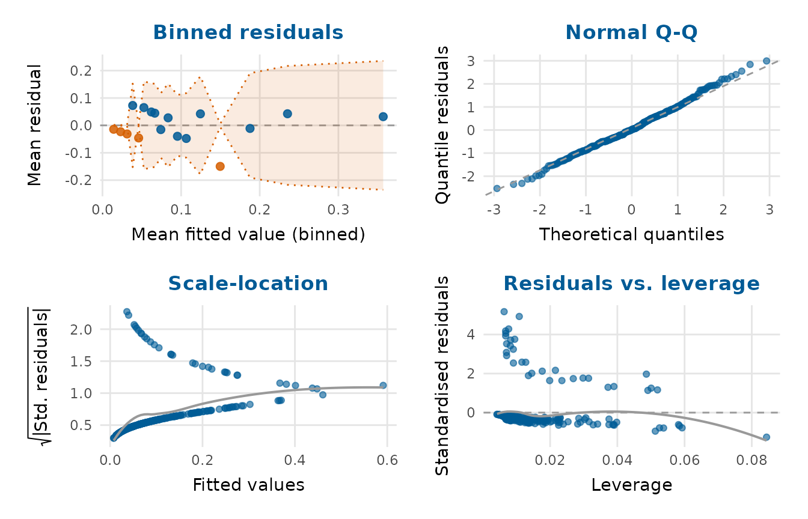

Residual-diagnostics panel for a fitted model
Source:R/residual_diagnostics_plot.R
residual_diagnostics_plot.RdCombines the classic regression diagnostic plots (residuals against fitted
values, a normal Q-Q plot of the standardised residuals, a scale-location
plot, and residuals against leverage) into a single panel using 'patchwork'.
The function works with lm and glm objects.
Usage
residual_diagnostics_plot(
model,
which = c("resid_fitted", "qq", "scale_location", "resid_leverage"),
ncol = 2,
point_alpha = 0.6,
smooth = TRUE,
title = NULL,
glm_panels = TRUE,
seed = NULL
)Arguments
- model
A fitted
lmorglmmodel.- which
Character vector choosing which panels to show, any of
"resid_fitted","qq","scale_location"and"resid_leverage".- ncol
Number of columns in the panel layout.
- point_alpha
Point transparency.
- smooth
Whether to add a loess guide line to the residual panels.
- title
Overall title for the panel.
- glm_panels
For a
glm, whether to use the GLM-appropriate binned and quantile-residual panels (the default) instead of the classiclmpanels. Ignored for anlm.- seed
Optional integer seed for the randomisation of discrete quantile residuals, for reproducible
glmQ-Q panels.
Value
A 'patchwork' object (printable like a ggplot2::ggplot).
Details
For a glm, the default panels are made GLM-aware (glm_panels = TRUE): the
"residuals vs. fitted" panel is replaced by a binned-residual plot
(Gelman & Hill, 2007; see binned_residual_plot()), which is readable even
for binary or count models, and the Q-Q panel uses randomized quantile
residuals (Dunn & Smyth, 1996), which are standard normal under a correctly
specified model regardless of the response family. The scale-location and
leverage panels are unchanged. For an lm the behaviour is identical to
before. Set glm_panels = FALSE to force the classic lm-style panels for a
glm as well.
References
Gelman A, Hill J (2007). Data Analysis Using Regression and Multilevel/Hierarchical Models. Cambridge University Press, Cambridge, UK. ISBN 978-0-521-68689-1. doi:10.1017/CBO9780511790942 .
Dunn PK, Smyth GK (1996). “Randomized Quantile Residuals.” Journal of Computational and Graphical Statistics, 5(3), 236–244. doi:10.1080/10618600.1996.10474708 .
Examples
fit <- lm(yield ~ rainfall + fertiliser + soil_ph, data = crop_yield)
residual_diagnostics_plot(fit)

residual_diagnostics_plot(fit, which = c("resid_fitted", "qq"))

# A logistic GLM gets binned and quantile-residual panels automatically:
gfit <- glm(adverse_event ~ biomarker + age + arm,
data = clinical_trial, family = binomial)
residual_diagnostics_plot(gfit)
